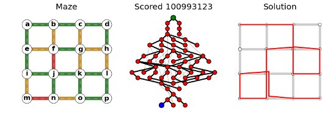
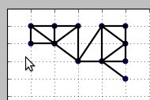

Getting started¶
vmfactory is written to make it easy to design, generate, vizualize and store Viennese Mazes. In a typical script, we generate or load a canvas (a maze without colors), we initialize it with random colors, we optimize these colors to make the maze difficult/interesting, we generate a report and we save the maze (maybe we will want to improve it later):
# This is a simple script to automatically design a maze: from vmfactory import Vmaze_NHT from vmfactory.canvas import squares_grid canvas = squares_grid(4,4) # nodes will be numbered 0..15 # NHT means no half-turns (can't pass a light twice in a row) maze = Vmaze_NHT(canvas, start = 0, goal = 15) maze.colorize( maze.random_colors() ) maze.anneal(400,20) # optimize the maze maze.make_report().savefig('myreport.png') maze.to_file('my_nice_maze.vm')
Here is a resulting report:
Generating a canvas¶
The module vmfactory.canvas implements several kind of canvas. We have seen squares_canvas in the introductory example. Here is how you use other shapes such as diamonds, stacked_cubes, or star:
from vmfactory import Vmaze_NHT
from vmfactory.canvas import stacked_cubes
maze = Vmaze_NHT(** stacked_cubes() )
# Now you can continue like in the introductory example
Note that by default the start and goal of the maze are the two extremities of the maze. You can change this as follows:
maze = Vmaze_NHT(** stacked_cubes() )
maze.start, maze.goal = 3, 8 # some other nodes.
You can also use a custom canvas. The simplest way is to provide the list of edges (connexions between the nodes):
maze = Vmaze_NHT(canvas = [(0,1),(0,2),(1,3),(2,3)], # etc.
start = 0, goal = 3)
Finally you can use the canvas editor, which allows you to easily define the maze and the position of the nodes:
from vmfactory.canvas import canvas_editor
canvas = canvas_editor()
Vmaze_NHT(canvas, start=0, goal=15)
The canvas editor provides an interface that looks like this:
In a first step you must place the nodes (right click to undo). Bear in mind that the order in which you add the nodes is the order in which they will be numbered. Press Enter when finished.
In a first step you must draw the edges by clicking on pairs of nodes. Reclick on that pair of nodes to remove an edge. Press Enter when finished. And you are done.
The different kind of mazes¶
You have seen that in the previous examples we used the class Vmaze_NHT, which represents Viennese mazes in which it is not allowed to pass by the light twice in a row. You can use the class Vmaze_HT instead, in which this rule doesn’t hold. All the programming is exactly the same, only the rule is changed.
Optimizing the maze¶
For a longer description of Viennese Mazes and how they can be programatically generated, refer to `this blog post (not written yet)<zulko.github.io>`_, or to the details in the reference manual.
In the current implementation, before the colors of the traffic lights of the maze are optimized, they must be set randomly:
maze.colorize( maze.random_colors() )
Then you improve this maze by changing a few colors randomly and seeing if the resulting labyrinth has a better score (see next section for the discussion on the score). If it has, it replaces the current maze.
The next snippet repeats this procedure 100 times, and each time each traffic light in the maze has a probability of 0.1 to be changed:
maze.improve(100, proba_change = 0.1)
A second way of optimizeing a maze, which is a refinement of improve, is anneal. The idea is that it first execute improve with a high value of proba_change, then it repeats improve with lower values of proba_change. The result is that, at first, many very different mazes are considered, and as we find better and better mazes, the search is limited to mazes which ressemble these mazes.
# Runs 20 times maze.improve(200, p), with decreasing p.
maze.anneal(200,20)
Changing the way the score is computed¶
The way the score is computed determines the criteria according to which the mazes will be optimized. Do you prefer mazes with a lot of loops ? Or mazes whose solution is very long ? Or mazes that are difficult to solve both forwards and backwards ? The way the score is computed must reflect all these criteria.
The score of a maze is computed using the method vmaze.compute_score(). The default score is computed as follows: if there is no solutions it will be 0, if there are solutions (not just one), it will be 1. If there is a unique solution, what we want, it will be (roughly) the product of the length of this solution, the number of loops in the maze, and the number of openings and endings.
If you want to use your own way of computing the score, you must create a subclass of Vmaze_NHT or Vmaze_HT (depending on which rules you want) and overwrite the compute_score method, like this:
class Vmaze_NHT_long(Vmaze_NHT):
""" A class that will tend to optimize mazes so that
their solution is very long. The unicity of the
solution is not granted. """
def compute_score(self):
""" See the introductory blog post for infos. """
graph = self.compute_graph()
if self.start not in graph.nodes(): return 0
shortest = nx.shortest_path(graph, self.start)
if graph.goal not in shortest.keys(): return 0
return len(shortest[graph.goal])
Now just use Vmaze_NHT_long instead of Vmaze_NHT in your scripts.
Making a report¶
With this package and a simple for loop you can produce thousands of mazes per day, but how do you quicly vizualize and assess the interestingness of a maze. Most of the time, the score is not enough, so vmfactory provides many functions to nicely plot the maze (maze.draw_fancy), plot its state graph (maze.draw_graph) or plot its solution(maze.draw_solution). See the documentation of each of these methods for more details.
You can also do all this at once and generate a full report for a given maze as follows (some options available, see the docs):
fig = maze.make_report()
fig.savefig('report.png')
It will give you this:
Saving / loading a maze¶
The easiest way to do save/load a Viennese maze is as follows:
# The following line saves
maze.to_file('my_nice_maze.vm')
# later
maze = Vmaze_NHT.from_file('my_nice_maze.vm')
You could also save you mazes in plain text. A convenient way to do so is to print the maze:
print (maze)
Result:
{
'start': 0,
'goal': 3,
'canvas' :[
(0, 1),
(0, 2),
(1, 3),
(2, 3)],
'nodes_pos':[
[0,0],
[0,1]
[1,0]
[1,1]]}